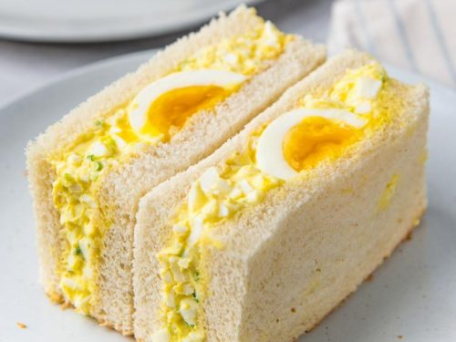

egg salad and boiled egg

Description
second only to pork katsu in the sando hall of fame, this is simply layers and textures of egg dressed in japanese mayo. if it ain't broke, don't fix it. when pressing the sando, it's important to remember which line you will cut down to show the cross-section of the egg.
Ingredients
- 6 eggs
- 1 1/2 tbsp. japanese mayonnaise
- 2 tsp. caster (superfine) sugar
- pinch of sea salt
- 2 tsp. double (heavy) cream
- 2 tbsp. salted butter
- 4 slices shokupan
Steps
- bring a medium-sized pot of water to the boil,then gently add the eggs and boil for 8 minutes. remove two eggs, and allow the remaining eggs to cook for a further 2 minutes.
- cool all the eggs under cold running water and peel (being sure to keep the 8-minute eggs separate).
- in a mediu-szied bowl, combine teh mayo, sugar, mustard, and salt, then whisk to dissolve the sugar.
- cut the 10-minute eggs in half and remove the yolks. crumble the yolks into the mayo mixture and add the cream, then whisk vigorously to combine.
- finely dice the 10-minute egg whites and fold into the mayo mixture.
- evenly spread the butter over the four slices of shokupan. cut the 8-minute eggs in half and place, cut-side down, on two of the slices.
- top the egg halves with the mayo mixture, then the remaining shokupan slices, butter-side down.
- gently wrap the sando in cling film (plastic wrap) and press for 30 minutes.
- to serve, trim the crusts and cut widthways.